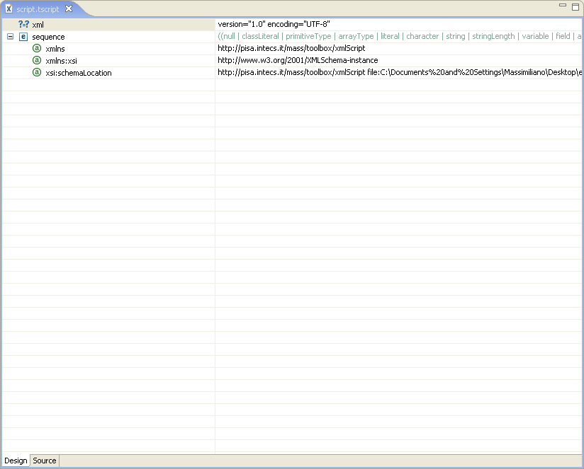

Opening one Toolbox script lead to the visualization of an editor filled with the file content.

Clicking on the tabs on the bottom of the editor it is possible to switch between graphical and textual view of the code. Each view has some specific features that let the user add and edit tags into the script.